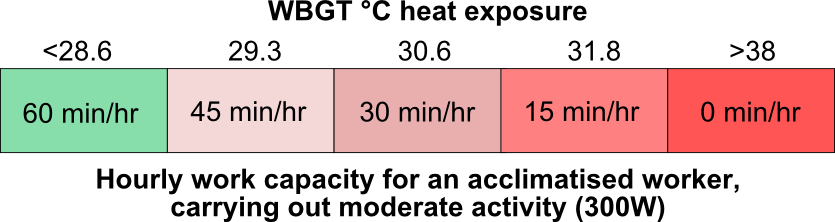
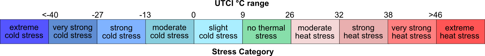

Climate prediction from 5 CMIP5 global climate models (Coupled Model Intercomparison Project Phase 5) for the RCPs 6.0 and 8.5 (Representative Concentration Pathways) spanning the range of possible future greenhouse gas concentrations depending on what mitigating actions humans take.
These models have been scaled to 0.5 x 0.5 degree grids and bias-corrected by ISI-MIP in Germany: www.pik-potsdam.de/research.
The ISI-MIP data has been processed by Chris Freyberg to calculate daily heat stress and produce the 30 year averages displayed.
The data presented on this page has been prepared by a small, charitable organisation.
While all care has been taken, the authors cannot not be held responsible for consequences resulting from inaccurate information.
Heat exposure for a human depends on the temperature, humidity, wind speed, solar radiation, clothes worn and the intensity of the work. We use two heat indexes: WBGT (wet bulb globe temperature) that has been used for decades and has solid empirical backing; UTCI (Universal Thermal Climate Index) is a modern heat stress index developed from a physiological model.
When the body generates heat (by work) faster than it can lose it, the core body temperature rises. While some increase in core temperature above 37°C is acceptable, an increase beyond 39°C creates health risks, which vary from person to person, depending on ethnic group, age, gender, the duration of high heat exposure, and the degree of acclimatisation. International Standards Organisation (ISO) sets guidelines to keep core body temperature at 38°C. It uses WBGT as the heat stress index to specify recommended rest/work cycles at different physical work intensities (ISO Standard 7243).

As solar radiation and wind speed are very variable from day to day (and hour to hour), we calculate indoor WBGT (no solar radiation and constant 1m/s wind). Outdoor WBGT is then estimated by adding a value to the indoor WBGT (approx.. 2.5C) that depends on the month and the location.
References
Lemke, B., and Kjellstrom,T. 2012. Calculating Workplace WBGT from Meteorological Data: A Tool for Climate Change Assessment, Industrial Health, 50, 267–278.
ISO (1989) Hot environments − Estimation of the heat stress on working man, based on the WBGT-index (wet bulb globe temperature). ISO Standard 7243. International Standards Organization, Geneva
Heat exposure for a human depends on the temperature, humidity, wind speed, solar radiation, clothes worn and the intensity of the work. We use two heat indexes: WBGT (wet bulb globe temperature) that has been used for decades and has solid empirical backing; UTCI (Universal Thermal Climate Index) is a modern heat stress index developed from a physiological model.

References